新闻观点
【热点】由一段视频引发的养老问责
前几天，有条“不孝子孙要送爷爷去养老院，遭父亲痛骂”的视频刷爆了朋友圈。
视频里，一对父子在激烈争执，看完后发现是儿子希望送爷爷去养老院，但遭到了父亲的激烈反对。在争执中，儿子还执着的拿出一系列新闻作为对比，强调自己的用心。也因为被一群网友戏称为“新闻哥”。
在该视频流出后，迅速引发了网友的广泛关注，其中大多数声音都是对儿子的口诛笔伐，认为他不孝、不够明白事理。也有人认为是父亲听不进去道理，固步自封，养老问题是早晚都需要面对的。
这些年，单靠一面之词引爆互联网的新闻屡见不鲜。所以，除了谩骂的网友外，还有很多人开始学会了不急于下判断，而是希望能有很多很全面的线索出现，而后再加以判断。
也正因为如此，很多成熟的网友一致在挖掘该事件背后的故事，希望能得到更多更详细的信息。
毕竟仅靠短短几分钟的视频，对于事情不可能有全貌的了解。
经过几天的搜索和等待，一份由该“不孝子”独自调查撰写的养老院调查报告开始在朋友圈中流传。
该养老院调查报告的出现，引发了众多人的深深思考，老龄化社会到来以后，咱们自己的爹妈，甚至咱自己以后怎么办。相对于这段时间引发热烈讨论的开放二胎政策，养老问题还是一个中国家庭忌讳莫深的敏感话题。
可以预见的是，在老龄化社会无可避免的中国，未来关于养老问题的争论将会成为社会议题的主流。下面放出这份调查报告的完整版本，希望在看完“不孝子”用心后，你也能对养老问题，有自己的思考：
据统计，我国65岁及以上的老年人口即将突破3亿人大关，并呈逐年递增的趋势。但截至到2015年初，全国的各类养老服务机构也不过4.2万个，平摊到每个老人身上，每1000个老人也只有24.4张床位可提供。
中国的老龄化趋势日益明显。北京大学的曾毅教授曾预测中国老龄人口峰值将在2025年出现，而这将对目前的社会保障体系产生巨大的冲击。中国当下的社保体系是现收现支统筹安排，一旦出现人口结构倒挂，即老年退休人数超过工作人数，那么将会出现巨大的养老缺口，养老负担会进一步加剧。
针对养老的争论越来越大，而人口结构倒挂的压力也在持续增大，因此亟待解答的问题是：如何应对社保危机？谁来为中国养老？
由于文化的原因，过去送老人去养老院一直被认为是不孝。但让独生子女一代的年轻夫妇承担”二拖四“甚至包括赡养祖辈的责任，显然也不太符合现实条件。因此，养老问题正在成为尖锐且无法回避的社会问题。
目前比较被公众认可的方案是，将年老的亲人送到一个条件良好像家一样的养老机构，并尽量每周末都去探望老人。但这种符合条件，让人满意的养老机构凤毛麟角，且大多收费较贵。
一方面，养老需要用钱，儿女应当承担养老的责任；另一方面，养老拖累了儿女，让年轻人没有时间和精力完全的投入在工作中去奋斗。成为了关于养老的另一个悖论，正如视频中孩子所面临的问题。
正如视频中那对父子所争论的那样，养老问题正成为我们每个人生活中无可避免的问题。你可以选择传统的家庭养老方式，也可以选择尽量为年老的亲人找到一家最合适的养老机构，唯一不可以选择的就是对问题避而不谈。
这个男人为什么要送最亲的人去养老院？
你会考虑送年老的亲人去养老院吗？
最近一段“不孝子孙要送爷爷去养老院，遭父亲痛骂”的视频，引起了整个南京的全民热议，尽管很多人表示送家里老人去条件完善的养老院是大趋势，但视频里年轻男子的做法仍然引起了很大争论。
视频里，一对父子在激烈争执，仔细听下来发现是儿子希望送爷爷去养老院，遭到了父亲的激烈反对。在争执中，儿子还执着的拿出一系列新闻作为对比，强调自己的用心是为了让爷爷得到更好的照顾。也因此，儿子被广大网友戏称为“新闻哥”。
但父亲则不依不饶，认为“这是丢人，会被人看不起，我们是高级退休干部家庭，做这种事情，现在你送了爷爷以后还会送我”。两个人争执不休，最后也没有和解。
这些年，单靠一面之词引爆互联网的新闻屡见不鲜。所以，很多人开始学会了不急于下判断，而是希望能有很多很全面的线索出现，而后再加以判断。
也正因为如此，很多成熟的网友一致在挖掘该事件背后的故事，希望能得到更多更详细的信息。
毕竟仅靠短短几分钟的视频，对于事情不可能有全貌的了解。
经过几天的努力，今天开始一份由该“不孝子”独自调查撰写的养老院调查报告开始在朋友圈中流传。
该养老院调查报告更是在出现后，引发了众多人的深深思考，老龄化社会到来以后，咱们自己的爹妈，甚至咱自己以后怎么办。相比较而言，南京家庭对于送老人去养老院问题的接受程度算是很高的了，但养老问题还是一个敏感话题。
下面就放出这份养老院调查报告的完整版，相信每个人看完后都会对该“不孝子”有一次全新的认识。
有很多朋友，在看完调查报告后，都在朋友圈里发表了长篇大论，认为送老人去养老院是不能接受的。
但也有很多人认为，如果养老院的条件很好，老人会得到周全的照顾，在经济条件允许的情况下，会把老人送到高级专业的养老院中去。这样反而会让老人得到周全的照顾。
可以预见，有关养老的话题，将会是未来中国社会无可避免的持续热点话题，毕竟，养老是一个家庭里最大的事。
当代社会条件与中国传统文化之间激烈的交锋，也将继续下去。作为个体的你，如果条件允许，会送年迈的亲人去养老院吗？
不养老的人，究竟能不能活在中国?!
最近网上关注度爆表的“不孝子孙要送爷爷去养老院，遭父亲痛骂”小视频，乃们都看了吗？
为没看过的筒子们奉送贴心前情回顾：
视频中，父亲反复强调：“这样做是丢人，别人会怎么想，我们家是高级退休干部，你现在送爷爷以后是不是还会送我去养老院”等内容，可以听出现场很多亲戚都特别尴尬，但两父子仍然激烈辩论。
这个世界的人大体可以分为两种：沉默的大多数，和有主见的个体。
沉默的大多数：在意别人的看法，喜欢随大流，遵守传统。
有主见的个体：更坚信自己的价值观，喜欢凡事都问个究竟，看起来有些离经叛道。
人们喜欢对“不孝子”口诛笔伐，因为它只需你敲敲键盘，不用负任何责任。这些骂街的人里，不一定全是孝子。
人们也喜欢对“迂腐的父亲”人身攻击，认为网络另一边的自己绝不会像他这样固步自封，听不进道理。
今天一份由该“不孝子”独自调查撰写的养老院调查报告被公开后，那些活跃在第一线的评论家，又有了新的主题可以讨论了。看到新闻哥如此用心，原本对他颇有微词的小编也不禁自惭形秽。如今为长辈养老的问题花费这么大精力的年轻人已经很少见了。
据了解，视频里的“不孝子”和父亲生活工作在上海，爷爷仍然在老家四川，一直希望能找一间条件理想，专业放心的养老机构，让上了年纪的父亲少操心，让逐渐丧失自理能力的爷爷能够在老家有专业护理人员照顾，安心养老。在视频中的争执发生前一个月，爷爷刚在老家不慎摔倒，虽然没有大碍，但也是劳筋伤骨，确确实实在医院里呆了半个月。儿子也因此暗下决心，为了保障年迈的爷爷，还有父亲之后的养老生活，在工作忙个人时间少的前提下，尽自己所能寻求对长辈最好的养老方式。他自己下苦功对家乡，对上海，甚至是全世界可借鉴性的养老机构都作了一番研究调查。
究竟是一份怎样的养老院调查报告，能引发这么激烈的讨论？乃们自己来感受一下该“不孝子”的用心吧：
一整版养老机构研究名单
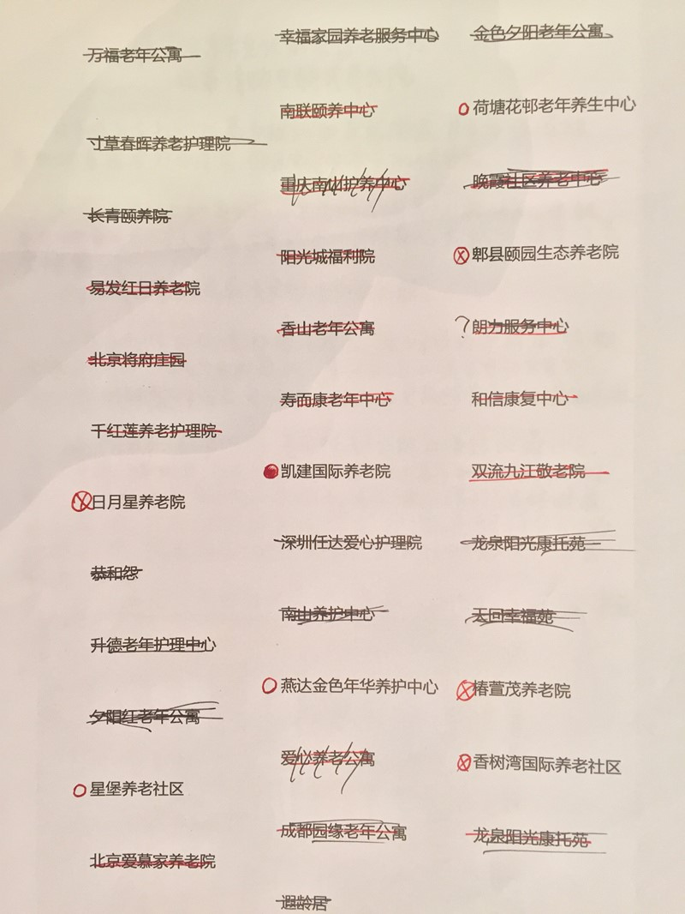
具体养老机构调查结果，报纸摘要和评价 （摘取部分内容）
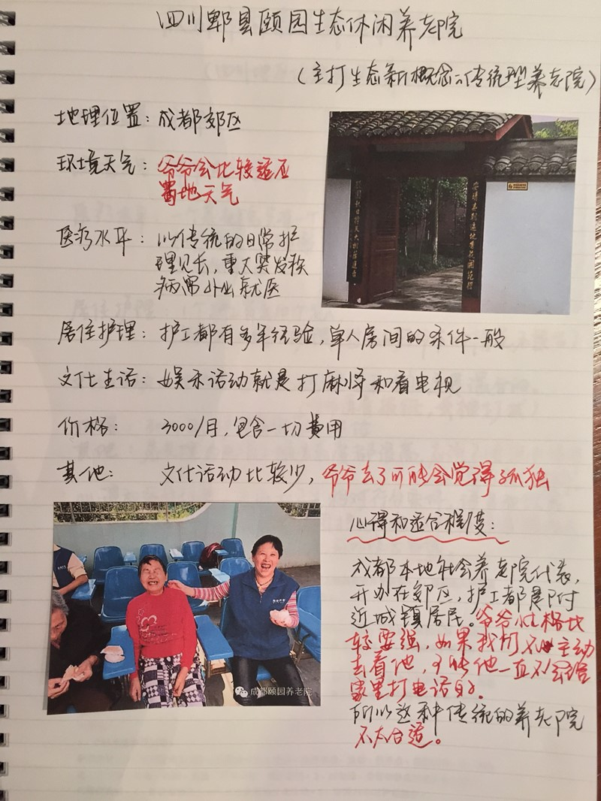
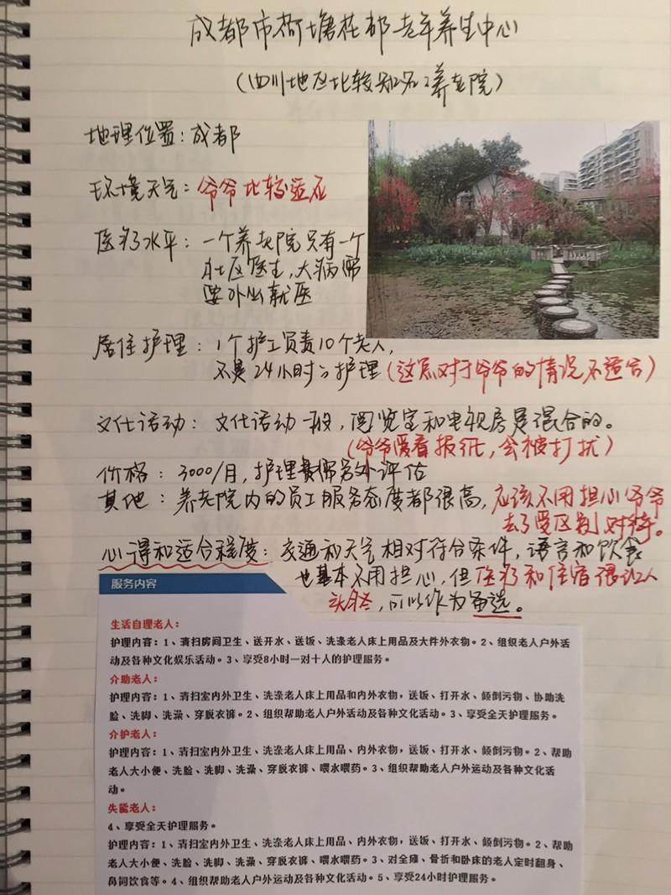
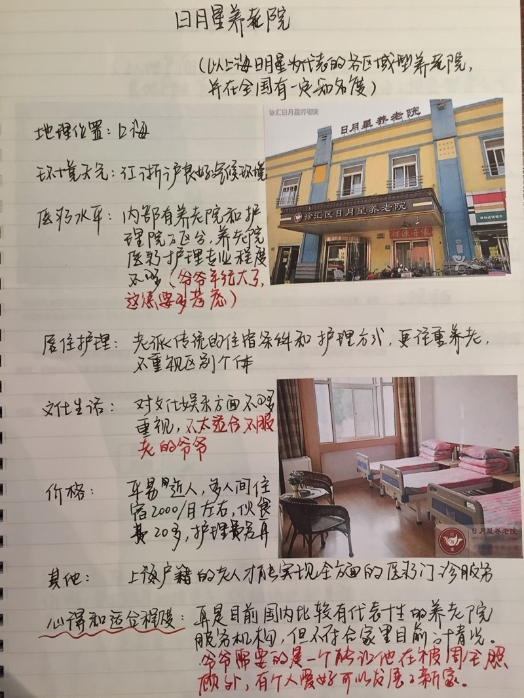
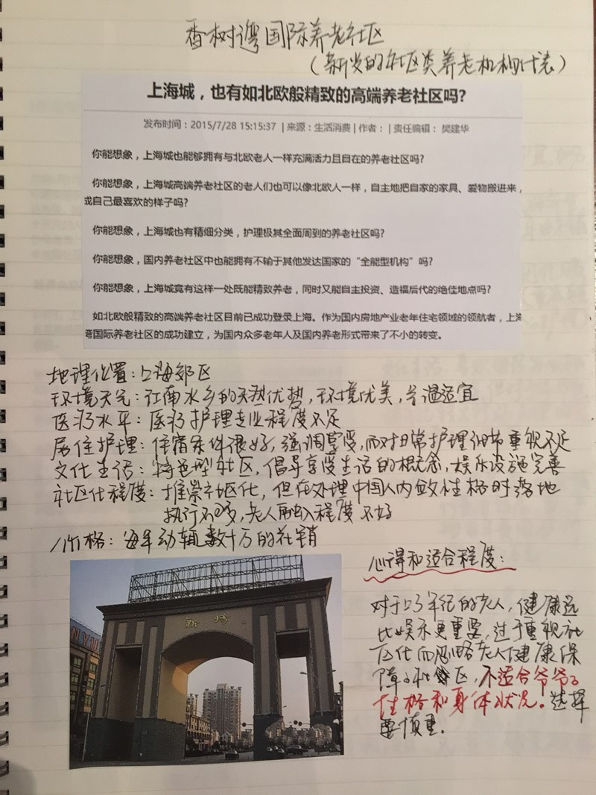
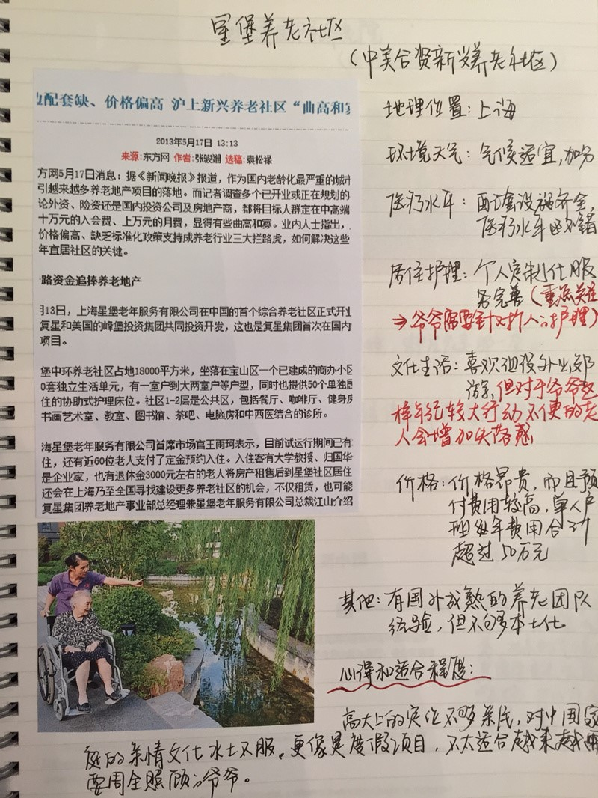
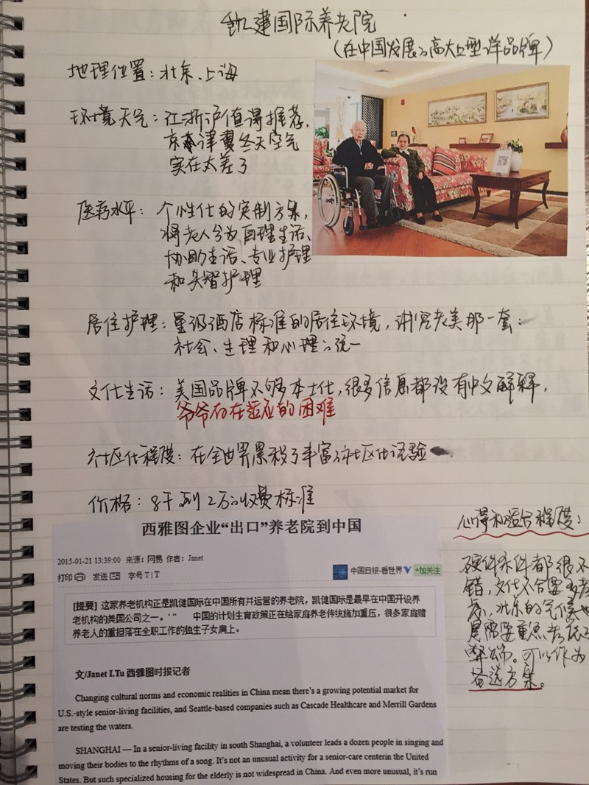
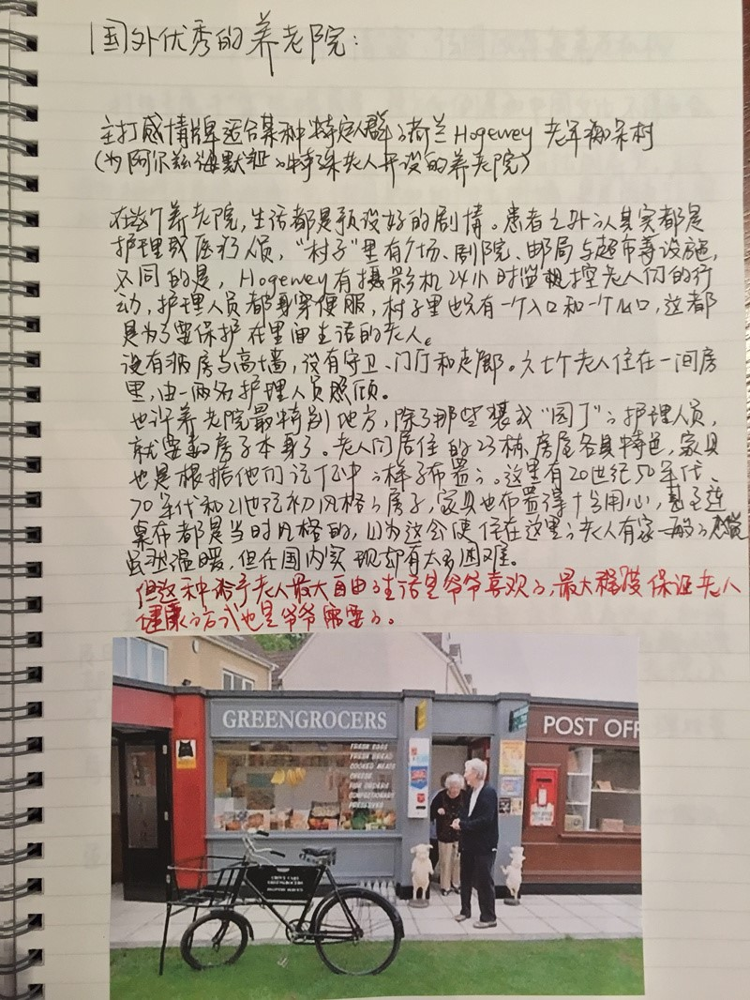
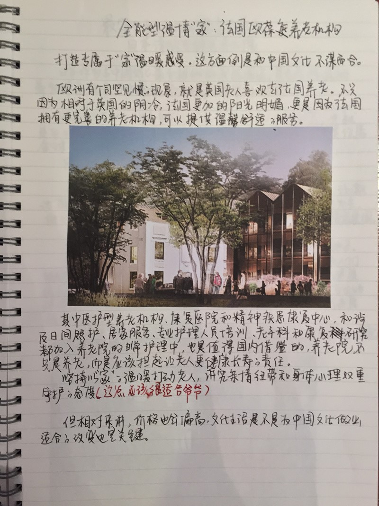
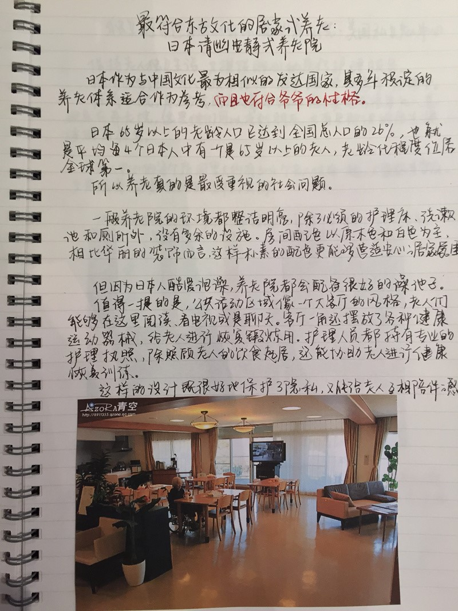
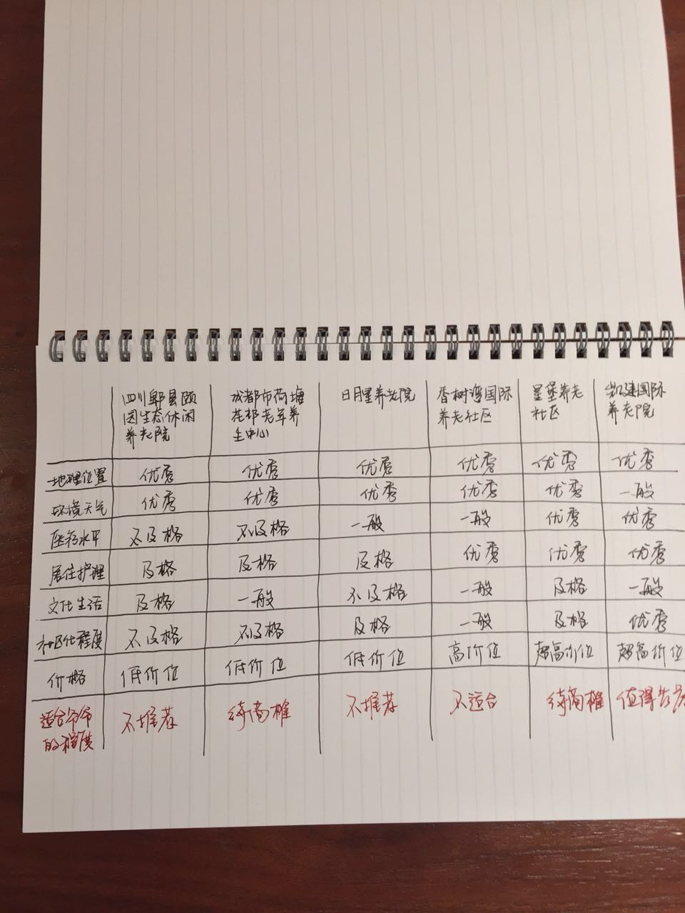
这份由该“不孝子”独自调查撰写的养老院调查报告由朋友圈发酵并在网上疯传后，那些活跃在第一线的评论家，又有了新的主题可以讨论了。
可以预见的是，在老龄化社会无可避免的中国，未来关于养老问题的争论将会成为社会议题的主流。不管你是沉默的大多数，还是有主见的个体，养老都是你必须要直面的！
每个人都会老，老了的人都会需要照顾。
中国正进入老龄化社会，养老是我们每个人都将要面对的现实问题。
我国的老龄化人口早已突破2亿，并向着3亿人口大步迈进。但在文化上，居家养老仍是老年人口的基本诉求。虽然现在很少家庭是四世同堂，但中国人对拥有自己的空间要求非常高，居住在养老机构都是迫不得已的，而且在普通中国人的认知中，住养老院的基本都是失能和高龄老人。
另一方面，医疗护理是养老的重中之重，而目前的养老院大多只能提供基本的保障，很难在未来去覆盖护理和其他各种服务，只有很多高端的国外品牌养老院在医疗服务上能满足老龄人口及其家人的需求，但收费通常较贵。
再次，养老市场本身也存在结构性失衡的状态。一方面，大量的养老社区空置，养老机构的床位空置；另一方面，大量老年人有各类服务和护理的需求得不到满足。受制于居家养老的影响，养老社区和养老机构在中国并不是特别受欢迎。
以北京为例，目前养老机构3.06万张床位入住率为47%，10个郊区县4.96万张床位的入住率更是低至32%。
对于大部分养老社区来说，为维持运营成本，不得不走高端路线，但其本身又不具备高端养老院所要具备的基础条件。因此造成了普通人对于养老院的误会。
尤其对于很多步入而立之年的80后们，父母和祖辈的养老，正在成为心口的一座大山，对于养老院的态度也正在从这一代人身上发生转变。
这份养老院调查报告的出现，可以说是这一代人看法的浓缩。他们受过高等教育，大多成长于城市家庭，世界观和价值观更加西化，面对养老问题采取的更多是开放的态度。
但开放未必真的就是进步，传统也并非真的就是落后，在中国现行的社会舆论下，任何只是拿来吸引眼球的公众议题和谩骂都是解决不了任何问题的，大家更多的还是要去理性的探讨，探讨如何解决，探讨如何生活，探讨现在的祖辈和以后的我们，终将如何养老！